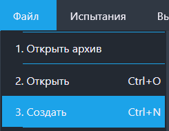
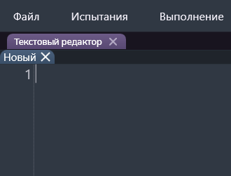

Функция "Создать"
Данной функцией можно создать новый текстовый файл
Путь и вызов
Нахождение в программе
Верхнее меню → "Файл" → "Создать"
Горячие клавишы
Ctrl + NНа изображении показано нахождение данной функции в программе:

Действия после нажатия
После нажатия горячих клавиш или ЛКМ по кнопке "Создать" открывается текстовый редактор (рисунок 2).
